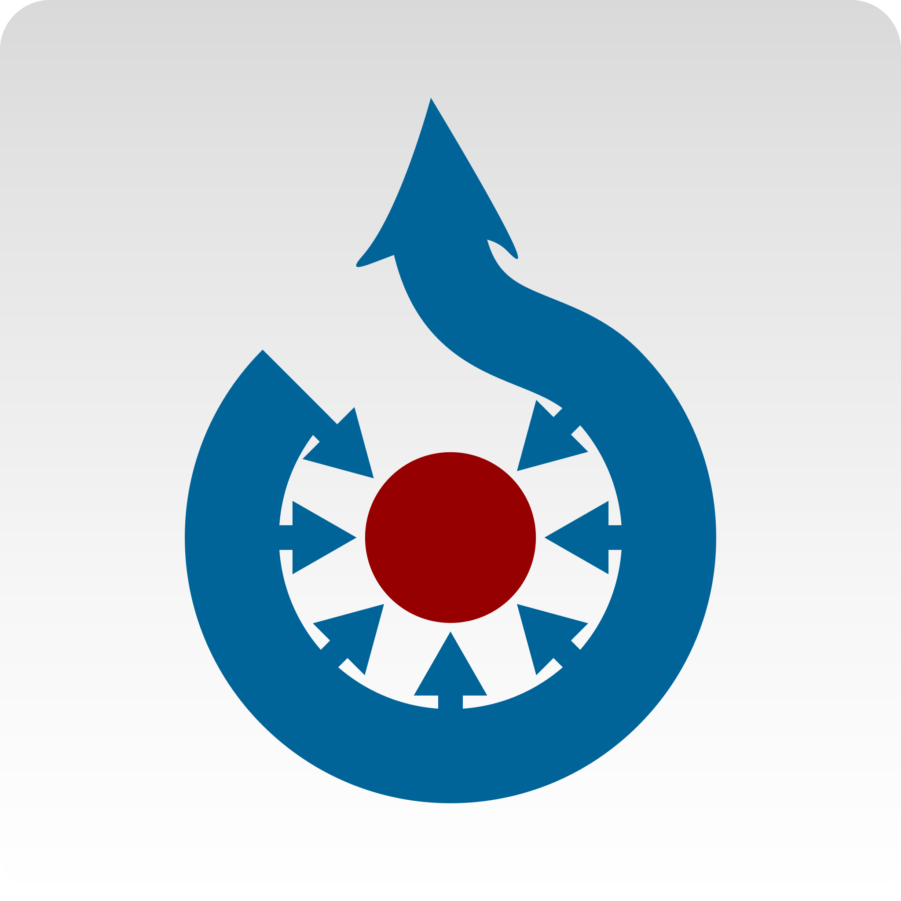
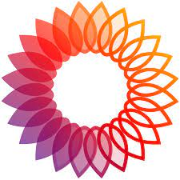
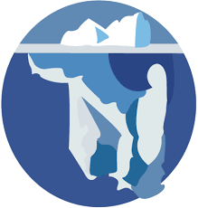

Wikipedia es alojada por la Fundación Wikimedia, una organización sin fines de lucro que también alberga una gama de otros proyectos.
Puedes apoyar nuestro trabajo con una donación-

Commons
Fotos libremente utilizables y más
-
wikiviajes
La guía de viajes libre
-

Wikcionario
El diccionario libre
-
Wikilibros
Libros de contenido libre
-
Wikinoticias
La fuente de noticias libres
-

Wikidata
Base de conocimiento libre
-
wikiversidad
Plataforma educativa libre
-
Wikiquote
La coleción de citas
-

MediaWiki
Aplicación wiki libre y abierta
-

Wikisource
La biblioteca libre
-
Wikispecies
Directorio de especies libre
-
Wikifunctions
Free function library
-
Meta-Wiki
Coordinación y documentación comunitaria